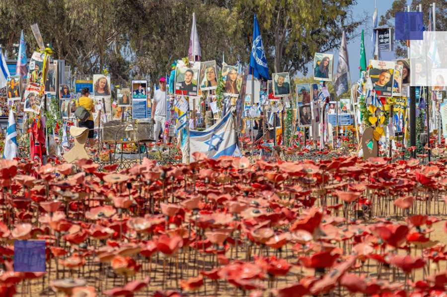
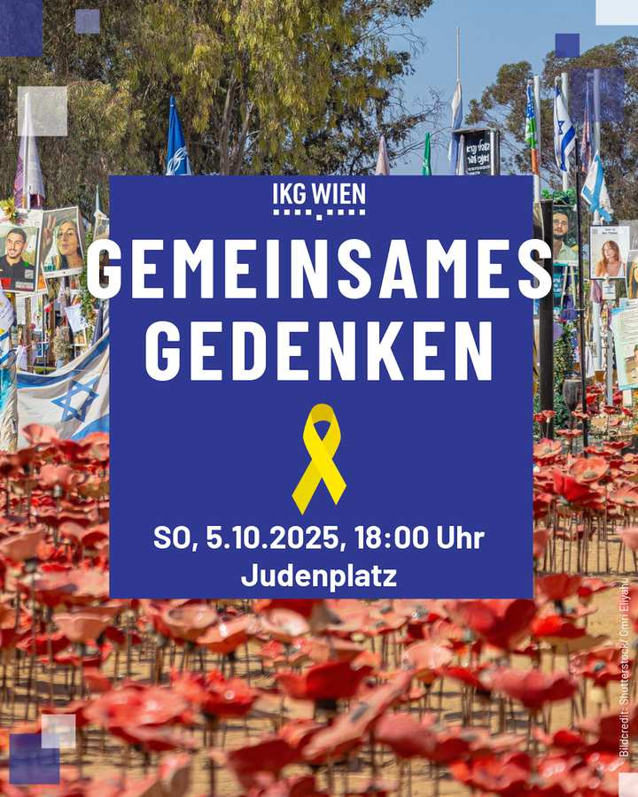
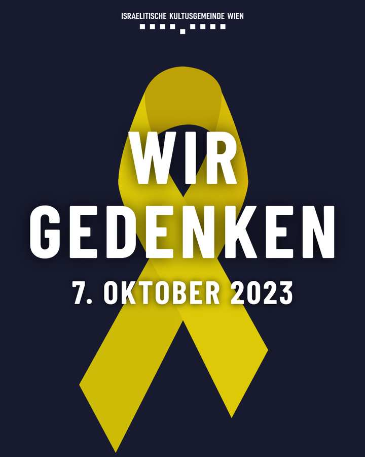
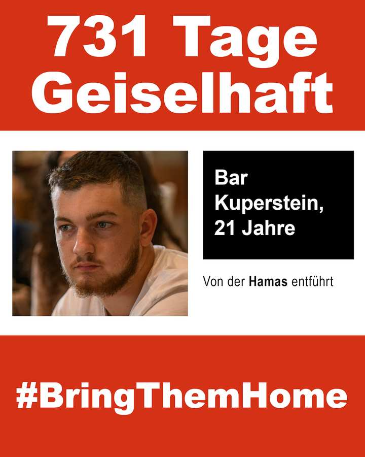
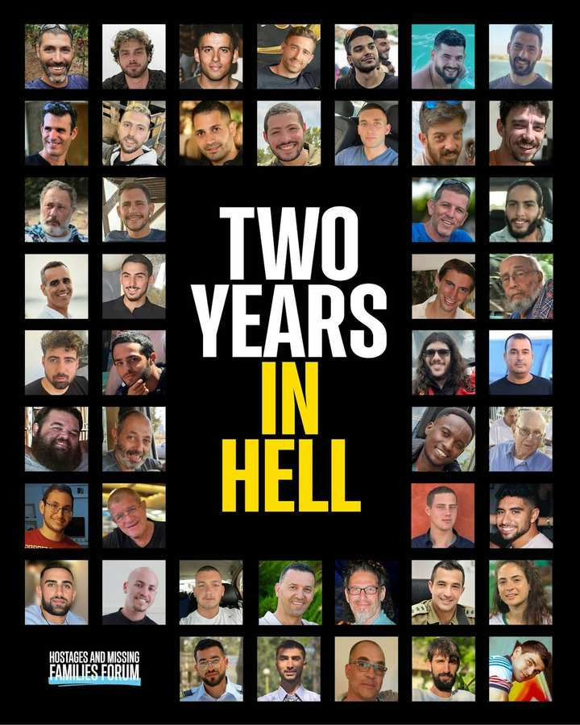

Shutterstock/עומרי אליהו
יום השנה ל-7 באוקטובר 2023 מתקרב, המהווה נקודת מפנה דרסטית לכל הקהילות היהודיות ברחבי העולם ולעולם התרבותי כולו. הפוגרום הגדול ביותר מאז ההשואה צרוב בכאב בזיכרון הקולקטיבי שלנו. מכיוון שה-7 באוקטובר חל השנה בחג סוכות, נתכנס ביום ראשון, ה-5 באוקטובר, 2025 בשעה 18:00. להנציח את הנרצחים ולזכור את בני הערובה שעדיין נחטפים.
סביב ההנצחה המשותפת, פועלת הקהילה הישראלית, יחד עם ארגונים רבים בווינה, להעלאת הנראות של בני הערובה.
לפני תחילת שמחת תורה, ב -13 באוקטובר בשעה 18:00, תתקיים אנדרטה משותפת לבני הקהילה בבית הכנסת המרכזי.
הזמינו את חבריכם ומכריכם לעצרת ב-5 באוקטובר!
שתפו את התמונה הזו בפייסבוק או באינסטגרם ומשכו תשומת לב לאירוע בין חבריכם. אתה יכול גם לשתף את התמונה באמצעות WhatsApp.

צור סימן זיכרון גלוי ברשתות החברתיות!
שתפו את התמונה הזו בפייסבוק או באינסטגרם.
כמובן, אנו מציעים את הנושא גם בפורמט סיפור.

זכור את קורבנות ה-7 באוקטובר

אנו זוכרים גם את הנרצחים וגם את בני הערובה של ה-7 באוקטובר. כאן תמצאו מבחר תמונות ופרופילים. שתפו את הפוסטרים המבוקשים בערוצי המדיה החברתית שלכם ומשכו תשומת לב לגורלם של בני הערובה והנרצחים.

פורום בני ערובה ומשפחות נעדרות מספק גם חומרים לשימוש במדיה החברתית. הם יכולים גם לשתף בפרופיל שלך.
שותף לשיתוף פעולה
רשימה זו מתעדכנת כל הזמן.